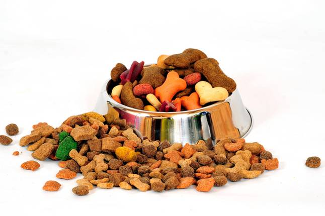

Helfen
Aber auch wir benötigen dafür Hilfe. Ihre Unterstützung ist für uns wichtig! Im Rahmen der Tierschutzarbeit gibt es zahlreiche Möglichkeiten, zu helfen. Für den laufenden Unterhalt unseres Tierheims brauchen wir natürlich auch ein Menge Unterstützung. Vielleicht sehen Sie ja für sich eine Möglichkeit, uns bei unserer Arbeit beizustehen. Es gibt viele Möglichkeiten zu helfen:
- Sie übernehmen ein Ehrenamt
- Mitarbeit bei der Tierpflegee
- Mithilfe bei Veranstaltungen
- SMithilfe bei handwerklichen Arbeiten im Tierheim
- Sie unterstützen uns mit Ihrer Mitgliedschaft im Tierschutzverein
- Sie übernehmen für ein Tier eine Patenschaft
- Sie übernehmen die Pflege eines Tieres
- Sie übernehmen die artgerechte Unterbringung
- Die artgerechte Pflege
- Ganz viel Liebe und Verständnis für das Tier
- Berichterstattung an die Fachbereichsleiter über die Entwicklung des Tieres
- Wir sind dankbar für Geld-, Sach- oder Futterspenden
Futterspende-Boxen in Ihrer Nähe>
Sie wollen Futter aller Art für unsere Tiere spenden? Bitte beachten Sie bei Ihrem Einkauf in den nachgenannten Märkten unsere dortigen Futterspenden-Boxen:
- EDEKA
- Zoomarkt Freising
- Pfotenstüberl
- Futterhaus Freising
- Real
- Dehner
HELFEN SIE BITTE JETZT, denn wir leben im JETZT und nicht im Morgen. TUN Sie JETZT was Gutes und fühlen Sie sich gut dabei, eine Organisation zu unterstützen, die GUTES mit Ihrer Hilfe tut. Und wenn Sie nur 5 Euro spenden, helfen Sie schon unseren Tieren. Sie können sicher sein, durch Ihre Hilfe ausgesetzte, verletze oder anderweitig in Not geratene Tiere untergebracht, aufgepäppelt, gesund gepflegt und wieder an ein neues gutes Zuhause vermittelt werden. Dank Ihrer Hilfe im JETZT